Standard operating procedure SOP-01Focused ion beam · dual beam FIB-SEM
TEM lamella lift-out
Cut a slice about 100 nm thin out of a chosen spot of a microchip and carry it to a TEM grid: protective cap, trenches, cleaning, J-cut, lift-out, thinning and low-kV polishing, with gallium or plasma ions.
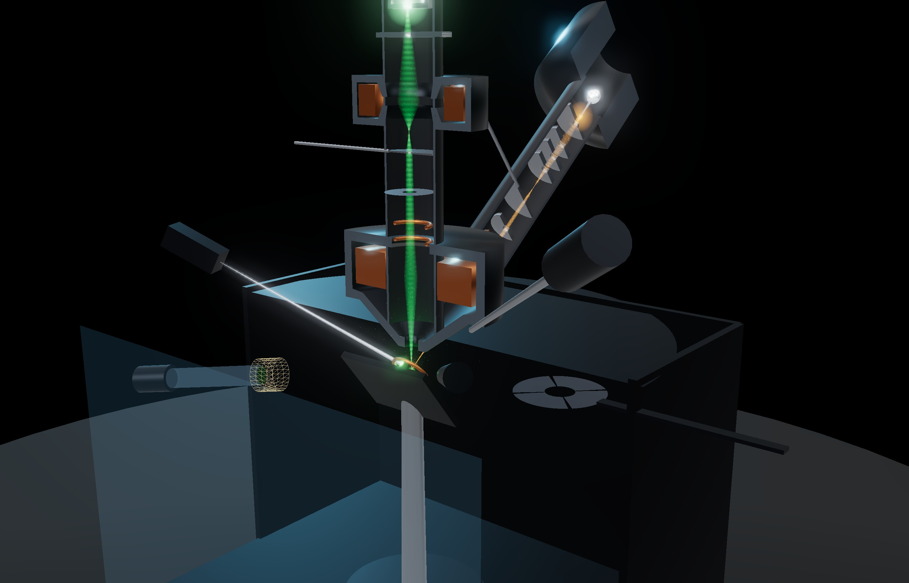
SOP-01, version 1.0, October 2026 For trainees on a dual-beam FIB-SEM, practising in FIB-view Simulation only: figures and numbers are computed by FIB-view
Sculpting with IonsFIB-view · Advanced-EM
SOP-01 TEM lamella lift-outScope and overview
Scope and overview
A TEM lamella is a slab of the specimen thin enough for electrons to pass through: below ~100 nm for high-resolution work. The focused ion beam cuts it out of a chosen site, here a bond pad of a microchip over three copper wiring levels, and thins it on a TEM grid. The electron beam watches every step without damaging the site.
Step
Pattern (Ga⁺, 30 kV)
Current
Time
1
Site, eucentric height, coating
none
imaging only
5 min
2
Electron-beam Pt
14 × 2 µm, 0.25 µm thick
3.2 nA e⁻, 5 kV
3.4 min
3
Ion-beam Pt cap
14 × 2 µm, 1.4 µm thick
100 pA (≈4 pA/µm²)
8.5 min
4
Bulk trenches
2 regular cross-sections 16 × 10 µm, 7 µm deep
9 nA
2 × 4.6 min
5
Cleaning cross-sections
2 × 15 × 2.4 µm, to a 1 µm wall
0.8 nA
2 × 18 min
6
J-cut and lift-out
side and bottom cuts; needle, Pt welds
2.5 nA
~12 min
7
Thinning
both faces, ±1.5° over-tilt
800 → 50 pA
~14 min
8
Low-kV polish
both faces at 5 kV, then 2 kV
50 / 25 pA
~6 min
Times are instrument time for the FIB-view chip, computed by the simulator (about 1.5 h in all). On a real instrument add navigation, imaging and drift checks. With a xenon plasma FIB, the trenches take minutes at 60 nA; thinning and polishing follow the same steps.
Terms used
Coincidence point: where the electron and ion beams cross, 52° apart. A sample at eucentric height sits on it: tilting does not move the site, and both beams see the same spot.
Regular cross-section (RCS): a staircase trench, deepest at its face. Cleaning cross-section (CCS): line-by-line milling toward the face, which leaves it flat and clean.
Application file: the material the software assumes to turn a depth into a dose (silicon here). Other materials end up deeper or shallower.
Rules
Never image the site with ions before it is capped. Every ion frame sputters and implants.
Step the current down with the thickness: the beam's tails must never reach through the lamella.
Image the thin lamella with electrons only, and at low dose.
Stop at the target thickness. You cannot add material back.
Caution. On a real instrument, follow your facility's safety rules for the gas injection system and the manipulator, and the manufacturer's documentation.
Sculpting with Ions · FIB-view2
SOP-01 TEM lamella lift-outStep 1 of 8
Step 1
Site, eucentric height and coating
Load the Microchip and open Lamella mode (key -). The stage moves to the coincidence point, tilts to 52°, and centres a bond pad: the site.
Find the eucentric height at 0° first. Centre a feature in the SEM image, tilt to ~10°, and bring it back with Stage Z, not with the stage X/Y. Repeat at 52°. (Training task: Dual beam: find the eucentric height.)
Check that the site is coated (a few nm of carbon or Pt). Uncoated oxide charges under both beams: the electrons make it bloom and streak, the ions make it dark and drift.
Image with ions only at the lowest current that shows the pads (10–25 pA) and only briefly. The ion image (Fig. 1) shows the pads' grains by channelling contrast.
Choose the lamella position: the line that the face of the lamella will follow. Here it runs across the pad and the copper lines below it.
Result. The site is at eucentric height and centred in both beams.
Note. At 52° an error of 10 µm in height shifts the ion spot by 7.9 µm from where the SEM shows it: the trenches would land beside the site.
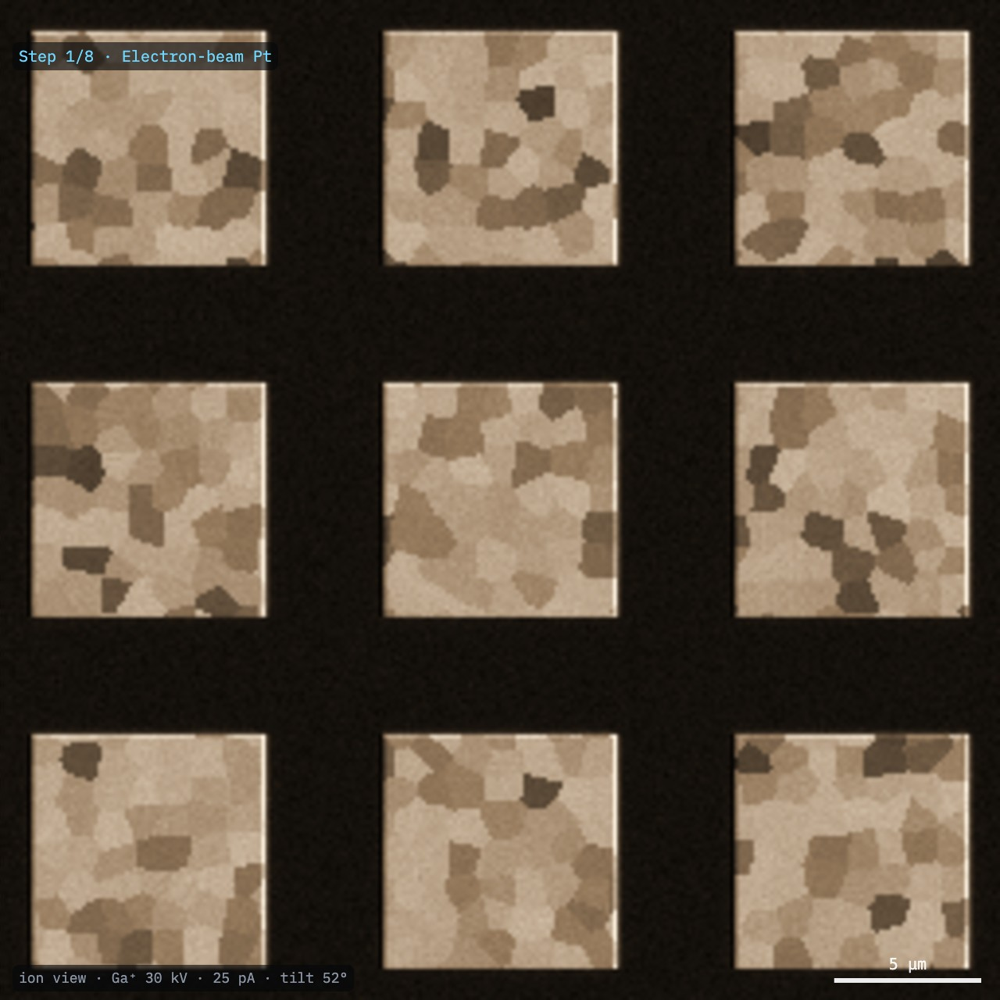
Fig. 1. Ion image of the site (Ga⁺ 30 kV, 25 pA, 52°): Al bond pads in oxide. Grains differ in brightness by ion channelling.
Sculpting with Ions · FIB-view3
SOP-01 TEM lamella lift-outSteps 2 and 3 of 8
Steps 2 and 3
The protective platinum cap
Insert the Pt gas needle. Draw a 14 × 2 µm rectangle over the lamella line.
Electron-beam Pt first: 0.25 µm at 5 kV, 3.2 nA. It is slow but puts no ions into the surface.
Then ion-beam Pt: 1.4 µm at 100 pA. Keep the current density near 2–6 pA/µm² (Table 1): above it the beam uses up the precursor and the deposit grows slowly; far above, the ions mill instead of deposit.
Retract the needle. The cap shields the top edge from the beam's tails during all the milling to come, and reduces curtaining.
Table 1. Ion-beam Pt (Ga⁺ 30 kV): net growth per charge
Current density
Net growth
Regime
1 pA/µm²
1.08 µm³/nC
reaction-limited
2 pA/µm²
0.93 µm³/nC
recommended
4 pA/µm²
0.73 µm³/nC
6 pA/µm²
0.60 µm³/nC
20 pA/µm²
0.23 µm³/nC
precursor-limited
50 pA/µm²
0.06 µm³/nC
sputtering wins
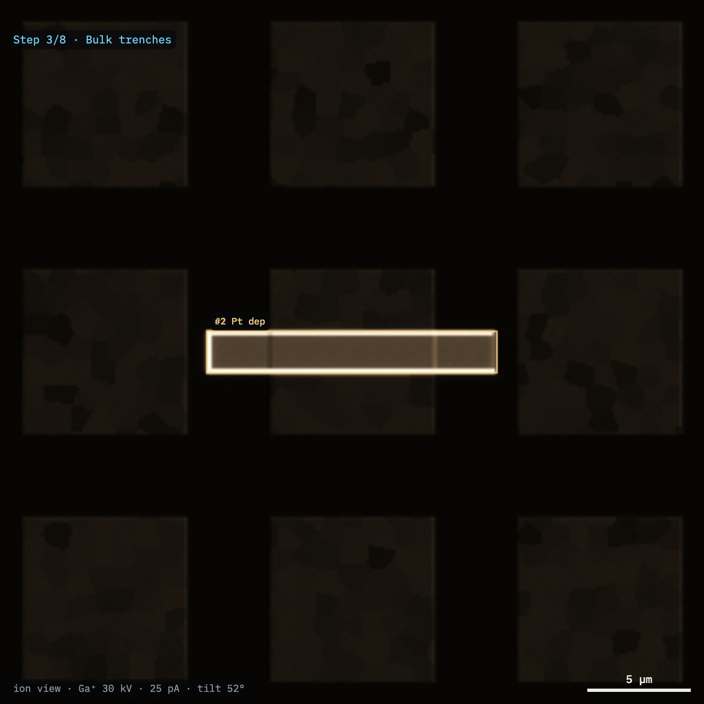
Fig. 2. Ion view after the cap: the Pt pattern over the bond pad.
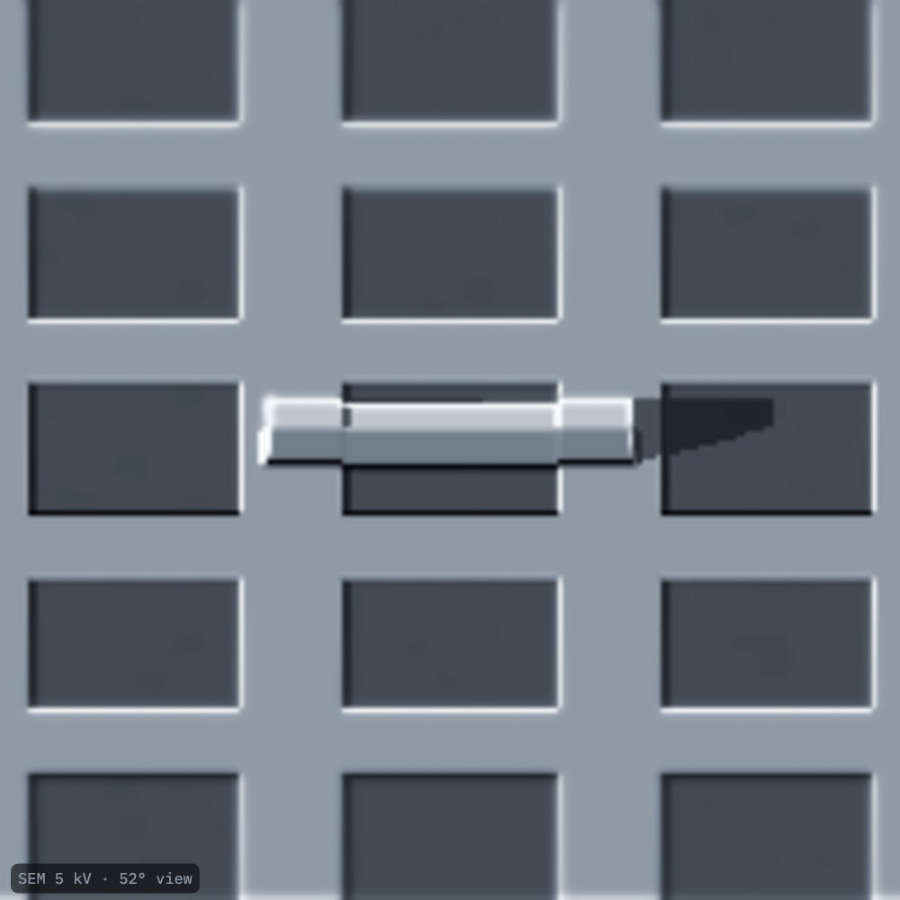
Fig. 3. SEM at 52°: the cap stands ~1.6 µm above the pad.
Sculpting with Ions · FIB-view4
SOP-01 TEM lamella lift-outStep 4 of 8
Step 4
Bulk trenches
Select 9 nA (Ga⁺). With xenon, 60 nA removes the same volume in a third of the time.
Draw a regular cross-section 16 × 10 µm on each side of the cap, leaving a 1.5 µm wall. Each staircase is deepest at its face, next to the wall.
Set 7 µm depth. Run both (about 4.6 min each).
Watch the SEM at 52° (Fig. 5): the faces appear, with the passivation, three copper levels, tungsten vias and, deeper, the silicon.
Note. The depth reached is not the depth asked: the dose comes from the silicon application file, and oxide, copper and tungsten mill at different rates. Sputtered material also redeposits in deep, narrow trenches. Check the depth on the face, not in the software.
Table 2. Probe diameter at 30 kV
Ga⁺ current
Probe
Xe⁺ current
Probe
25 pA
7 nm
30 pA
22 nm
100 pA
12 nm
100 pA
29 nm
800 pA
24 nm
1 nA
57 nm
2.5 nA
39 nm
15 nA
150 nm
9 nA
79 nm
60 nA
281 nm
65 nA
359 nm
500 nA
1.2 µm
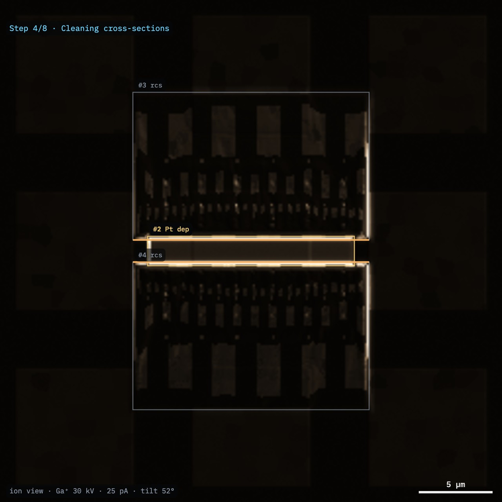
Fig. 4. Ion view: two staircase trenches either side of the cap. The trench floors expose the copper lines at their depth.
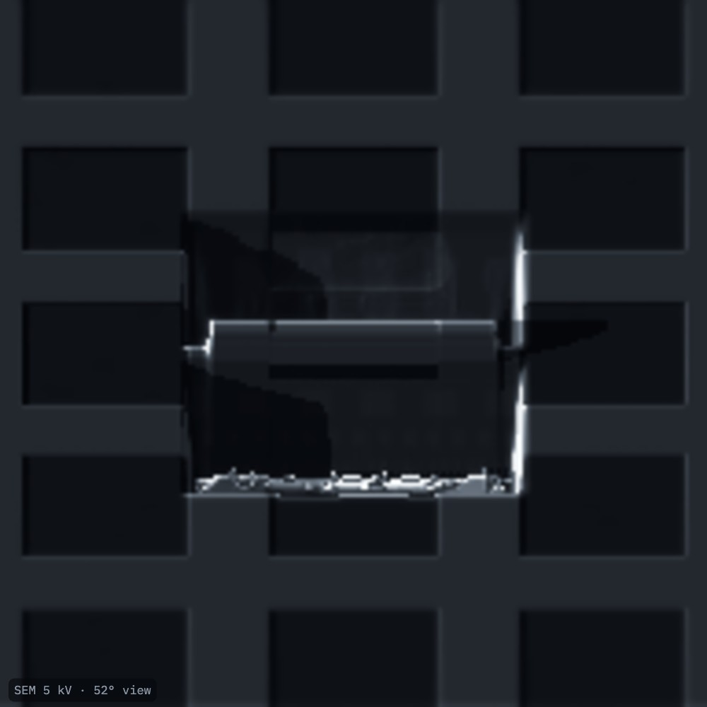
Fig. 5. SEM at 52° looking into the lower trench at the lamella face.
Sculpting with Ions · FIB-view5
SOP-01 TEM lamella lift-outSteps 5 and 6 of 8
Steps 5 and 6
Clean the faces, cut it free, lift it out
Cleaning cross-sections
Select 0.8 nA. Draw a cleaning cross-section 15 × 2.4 µm on each face, its face edge at the final wall position, leaving ~1 µm.
Run both. They remove the redeposited material and the steps the bulk trenches left (Fig. 6).
J-cut
Tilt to ~7° so the beam can reach under the lamella.
At 2.5 nA, cut one side and the bottom, leaving the lamella attached at the other side by a small tab (Fig. 7).
Lift-out
Insert the manipulator needle at eucentric height. Bring its tip to touch the free end of the lamella, seen in both beams.
Weld needle and lamella with ion-beam Pt (a 1 × 1 µm pad).
Cut the remaining tab. Lift the lamella out, retract the stage, and drive to the TEM grid post.
Touch the lamella to the post, weld it with Pt on its side, and cut the needle free (Fig. 8).
Caution. Move the needle only in small steps near the specimen and the post. Charging or drift can throw a free lamella off the needle.
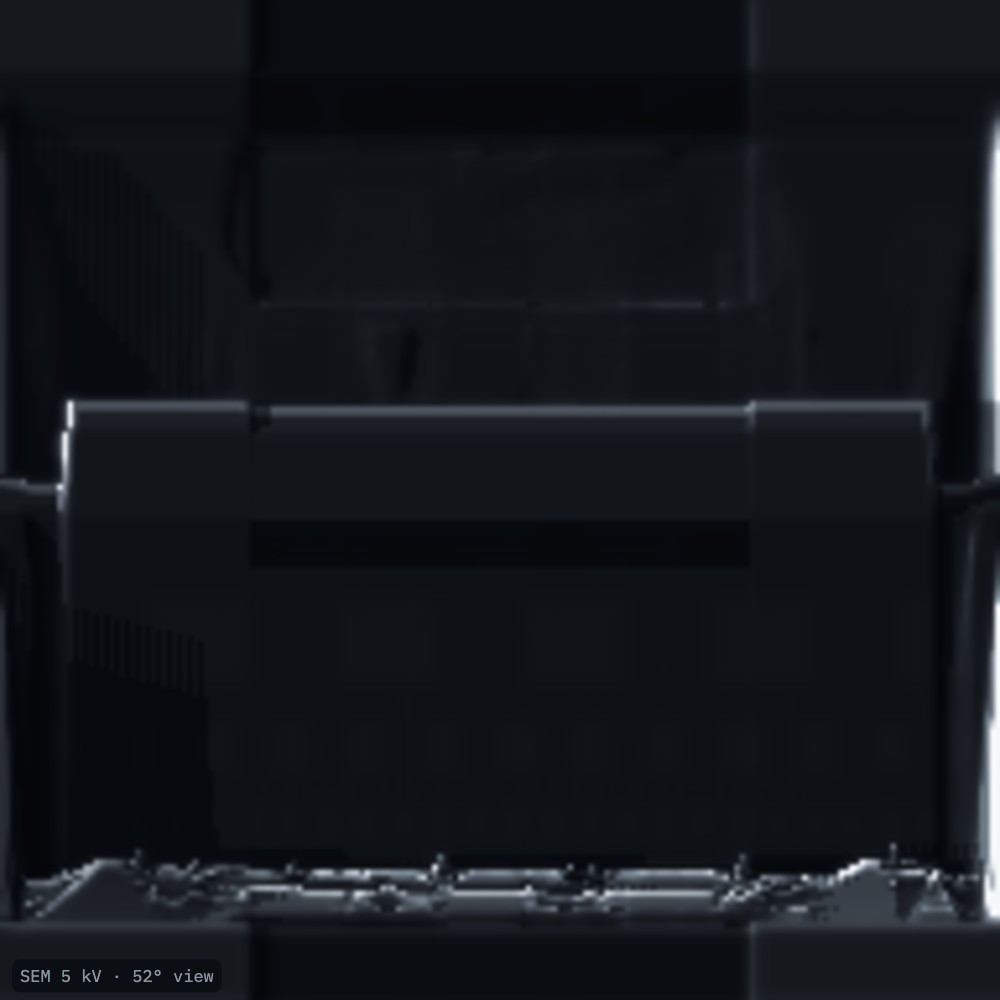
Fig. 6. SEM at 52° after the cleaning cross-sections: a flat face below the Pt cap.
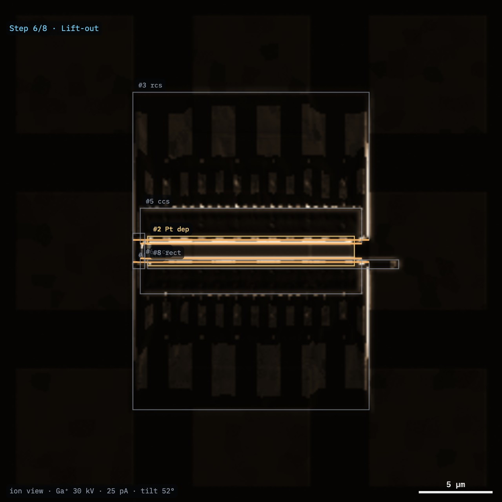
Fig. 7. Ion view: the J-cut.
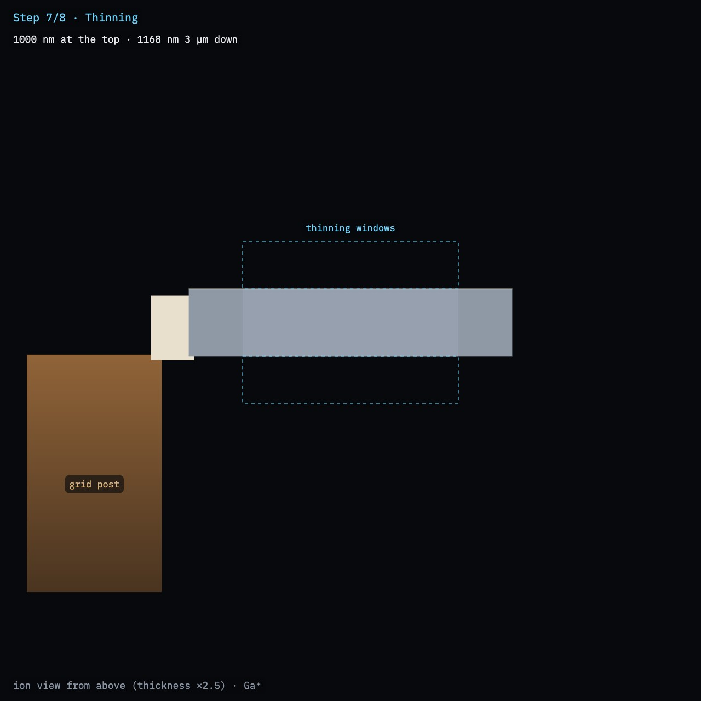
Fig. 8. On the grid post, welded, ~1 µm thick.
Sculpting with Ions · FIB-view6
SOP-01 TEM lamella lift-outStep 7 of 8
Step 7
Thinning
Tilt so the ion beam grazes each face with a ±1.5° over-tilt: one face at 52° + 1.5°, the other at 52° − 1.5°. The over-tilt cancels the beam's natural taper, which otherwise leaves the lamella wedge-shaped (Fig. 13).
Thin both faces alternately, stepping the current down with the thickness (Table 3). In FIB-view: Lamella controls, set the current and target, then Thin both faces.
After each pass, image the face with the SEM at 5 kV. As the lamella gets thinner than the electrons' range, it brightens and becomes uniform (Figs. 9–11). A gradient from top to bottom means a wedge.
Stop around 100–150 nm before polishing.
Table 3. A thinning recipe (Ga⁺ 30 kV) and its true result
Current
Target
Top / 3 µm down
Amorphous per face
800 pA
500 nm
501 / 512 nm
20–21 nm
300 pA
250 nm
249 / 260 nm
21 nm
80 pA
130 nm
131 / 141 nm
20–21 nm
50 pA
100 nm
101 / 111 nm
20–21 nm
Note. At 30 kV each gallium-thinned face keeps ~21 nm of amorphous, Ga-rich silicon. A 100 nm lamella then has only ~60 nm of good crystal: the reason for step 8.
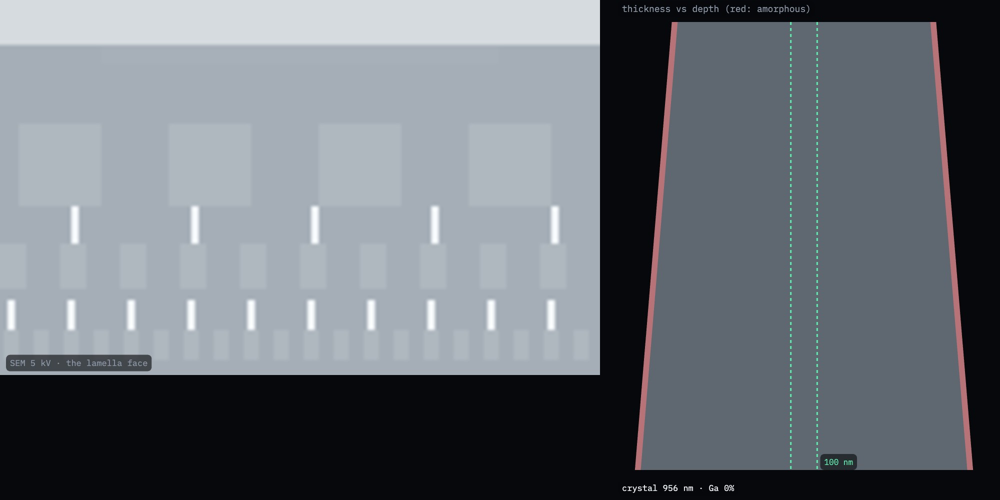
Fig. 9. 1 µm thick: at 5 kV the face is opaque. Right: the true thickness profile (grey) with its amorphous layers (red).
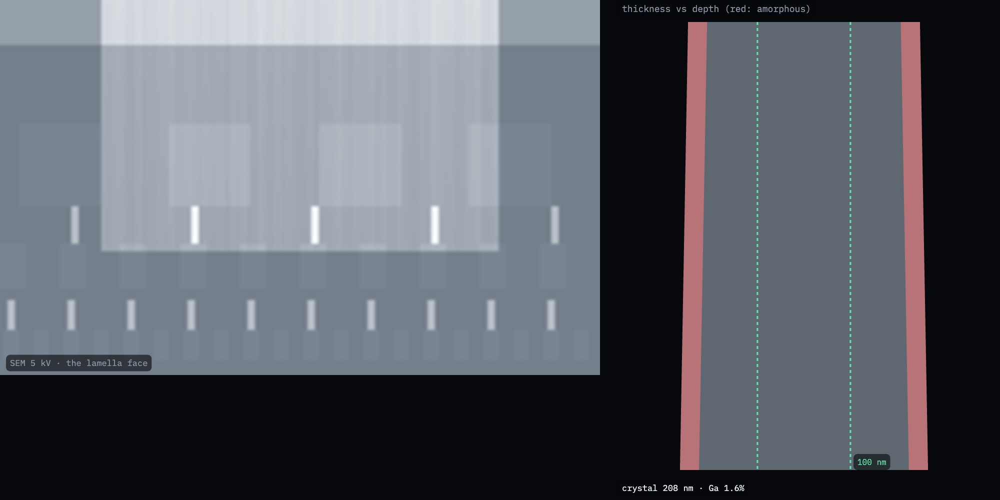
Fig. 10. 250 nm: the thinned window starts to brighten.
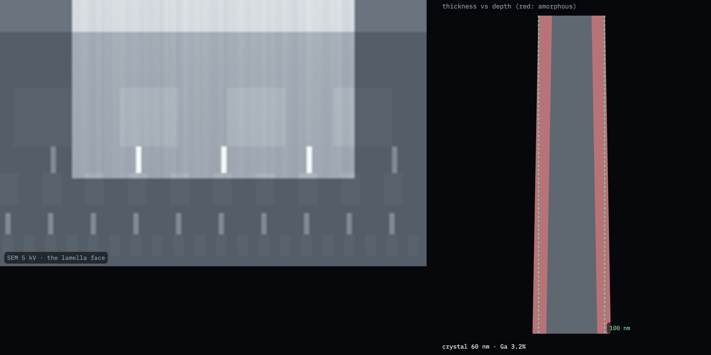
Fig. 11. 100 nm: bright and even. Ready to polish.
Sculpting with Ions · FIB-view7
SOP-01 TEM lamella lift-outStep 8 of 8
Step 8
Low-kV polish
Lower the ion voltage to 5 kV. Re-centre and re-focus the ion beam on the post, not on the lamella.
Polish each face at glancing incidence (over-tilt ~4–5°), 50 pA, for a few minutes: it removes most of the 30 kV damage.
Repeat at 2 kV and ~25 pA.
Image once more at 5 kV with electrons and stop. In FIB-view, Send to TKD checks the crystal quality: Kikuchi patterns sharpen as the damage goes.
Table 4. Amorphous layer on a lamella face (nm), by ion and voltage
Ion
30 kV
16 kV
8 kV
5 kV
2 kV
Ga⁺
22
13
8
6.5
3.9
Xe⁺
17
12
8
6.2
4.1
Ar⁺
31
18
10
7.9
4.2
About half the depth damaged at normal incidence, from FIB-view's binary-collision Monte Carlo (ZBL potential), for silicon. Xenon's heavier ions stop sooner; argon's lighter ones go deeper at the same energy. Plasma ions also leave no gallium.
Result. In this run: 80 nm at the top, 91 nm three micrometres down, 3.6 nm of amorphous silicon per face, ~73 nm of good crystal. Total ~1.5 h of instrument time.
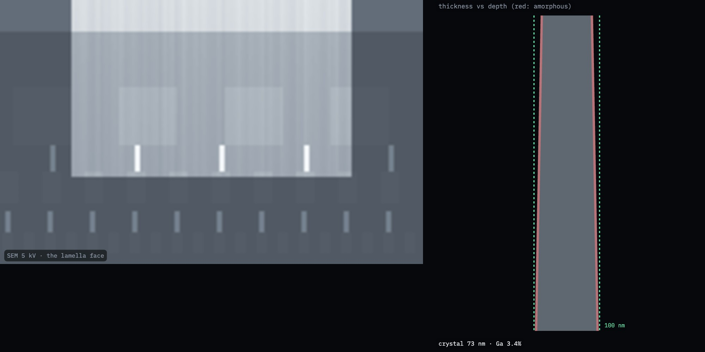
Fig. 12. After the 5 and 2 kV polish: the red amorphous layers are a few nanometres thin.
Sculpting with Ions · FIB-view8
SOP-01 TEM lamella lift-outTroubleshooting
When it goes wrong
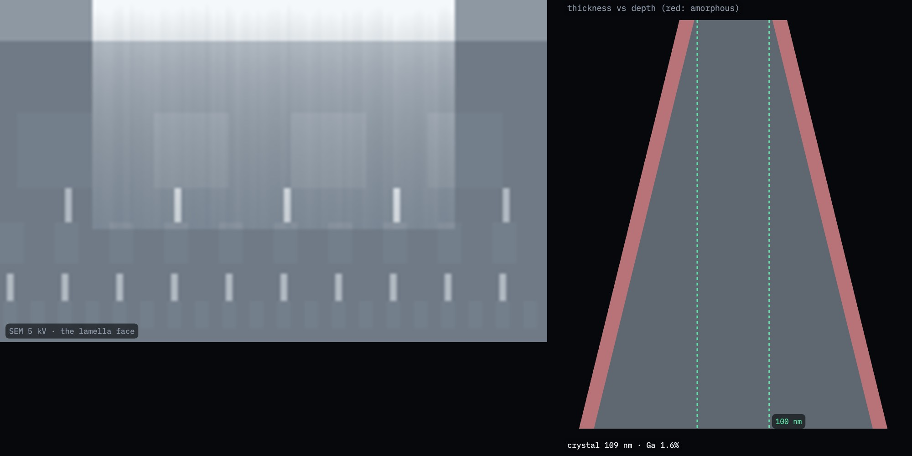
Fig. 13. No over-tilt: 151 nm at the top but 319 nm 3 µm down. The face darkens downward.
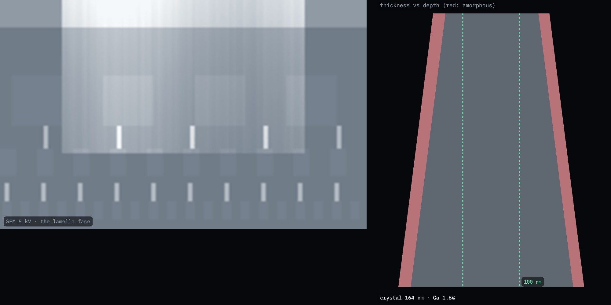
Fig. 14. 2.5 nA on a 200 nm lamella: it bent.
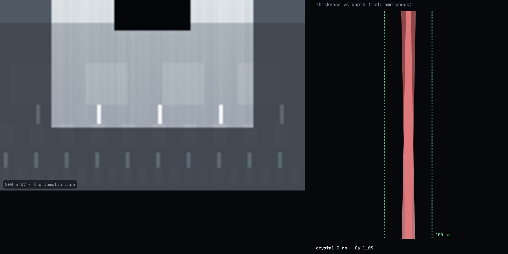
Fig. 15. Thinned to 10 nm: a hole near the top edge.
What you see
Likely cause
What to do
Trenches beside the site
Not at eucentric height
Redo step 1; check the ion and SEM images coincide
Rounded or eroded top edge
Cap too thin, or imaged with ions before capping
Thicker Pt cap; image with electrons
Vertical streaks on the face (curtains)
Milling through copper and oxide; no cap; plasma ions without rocking
Keep the cap; turn on the rocking mill; thin from the cap side
Face darkens toward the bottom
Wedge: no or too little over-tilt
Over-tilt ±1–2°; a short pass on each face
Lamella bends or bows
Current too high for the thickness; stress
Below 250 nm stay ≤ 300 pA; below 120 nm ≤ 80 pA
Hole at the top
Thinned too far; cap gone
Stop earlier; judge from the 5 kV image, not the target setting
Weak, diffuse Kikuchi bands in TKD
Thick amorphous layers
Polish at 5 and 2 kV
Ga in EDS, grain boundaries attacked
Gallium implantation (Al, Cu alloys)
Use a xenon or argon plasma FIB; low-kV polish
Sculpting with Ions · FIB-view9
SOP-01 TEM lamella lift-outChecklist
Checklist
Check
Value
Initials
Site coated; eucentric height set at 0° and 52°
Electron-beam Pt deposited before any ion imaging of the site
Ion-beam Pt cap ≥ 1 µm, current density 2–6 pA/µm²
Bulk trenches deeper than the region of interest
Faces cleaned to ~1 µm; depth checked on the face
J-cut complete except the tab
Lamella welded to the post; needle cut free
Thinning: current stepped down; over-tilt used on both faces
Uniform brightness at 5 kV (no wedge, no hole, not bent)
Polished at 5 kV and 2 kV
Final thickness estimate and total time recorded
Practise in FIB-view
Lamella mode runs these steps with real patterns on the chip; the thinning and polishing steps are yours to choose. The training task Lamella: thin to 100 nm hides the true thickness: you judge it from the 5 kV SEM view, rate your result, and then see the truth. With your consent the session is recorded, anonymously, for research on how operators judge thickness.
Sculpting with Ions · FIB-view10
Try it
The link opens FIB-view with the training task Lamella: thin to 100 nm.
FIB-view · Lamella training task
Works on a computer or a tablet.
The exhibit
github.com/Advanced-EM/FIB-view
Related procedures
SOP-02 Python scripting: automate milling and thinning, and test algorithms against the hidden truth.
The Console
The TEM-view Console drives FIB-view too: focus, current, stigmator, stage.
SOP-01 TEM lamella lift-out, version 1.0, October 2026 Simulation only. Nothing here controls a real instrument. Follow your facility's procedures and the manufacturer's documentation.